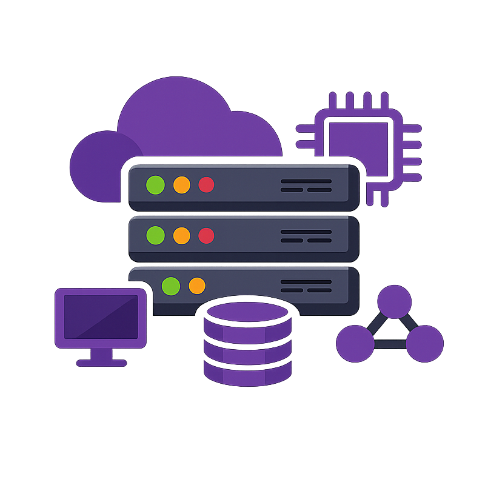
AltaBPO
Servidor MCP — Conecta agentes de IA a datos de Odoo en vivo
Convierte Odoo en un servidor de herramientas listo para IA. Expón tu ERP de forma segura a Claude, ChatGPT, Gemini, Cursor, n8n, LangChain y cualquier cliente compatible con MCP a través de un único endpoint — con OAuth 2.0, tokens con alcance, registros de auditoría, herramientas BI, páginas de portal, trabajos asíncronos y generación de módulos impulsada por IA.
Odoo 19 OPL-1 34+ herramientas MCP
AltaBPO
AltaBPO desarrolla soluciones a medida sobre Odoo, con foco en la localización peruana y en la automatización de procesos administrativos. Módulos fiables, probados y mantenidos.
Vista previa de la demo
Mira el Servidor MCP en acción
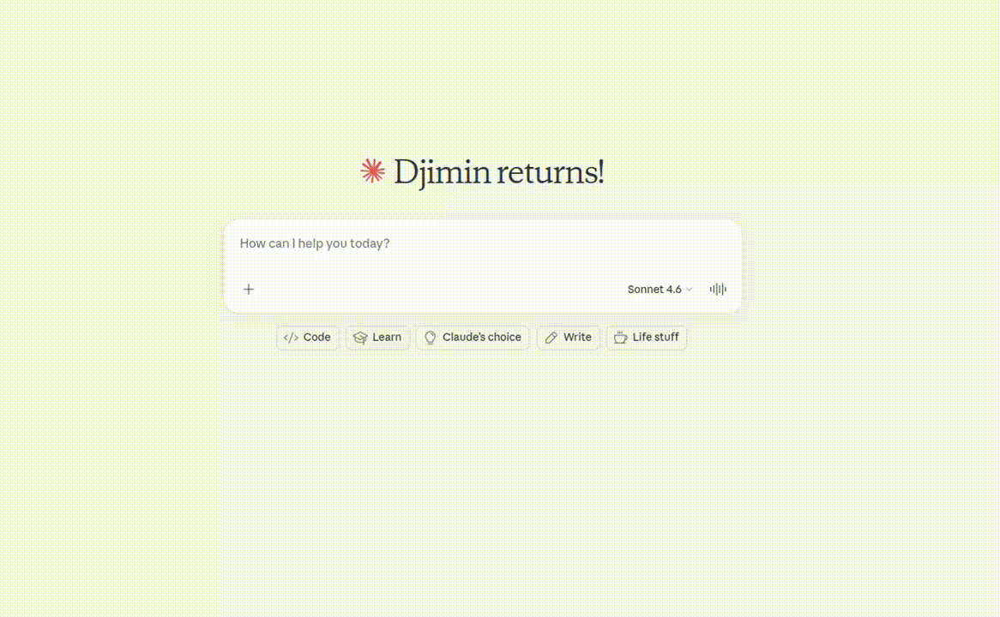
Guía de administración
¿Cómo realizas el mantenimiento en Odoo?
El Servidor MCP incluye controles de administración integrados — gestiona tokens, audita sesiones, vacía la caché, define políticas de retención y prueba la conectividad con Redis — todo desde la Configuración de Odoo.

Casos de uso
Lo que puedes construir con MCP + Odoo
Convierte Odoo en un servidor de herramientas listo para IA. Conecta Claude, ChatGPT, Gemini, Cursor/Claude Code, n8n, LangChain, crewAI (y más) a datos de Odoo en vivo — con gobernanza y registros de auditoría.
Del prompt al tablero
Tableros dentro de Odoo
Genera tarjetas KPI, tablas y visualizaciones interactivas de ECharts — con filtros y navegación en detalle hasta los registros de Odoo.
Ejemplo: "Crea un tablero ejecutivo de ventas con los ingresos del año hasta la fecha por mes y los principales clientes."
Del prompt al portal
Páginas públicas con datos de Odoo en vivo
Crea páginas de portal compartibles que se renderizan en el servidor y se mantienen siempre actualizadas (KPI, gráficos, tablas).
Ejemplo: "Crea una página de calendario de envíos en /mcp-page/shipping con las entregas salientes de hoy."
Informes / Listo para BI
Tabla dinámica, series de tiempo, embudo, cohorte
Ayudantes especializados para consultas de análisis: tabla dinámica, series de tiempo, top-N, cohorte, embudo y exportación en una sola llamada.
Ejemplo: "Los 10 principales clientes por ingresos este trimestre, agrupados por vendedor."
Del prompt al flujo de trabajo
Automatizaciones que respetan los ACL
Crea/actualiza registros mediante claves con alcance, ejecuta operaciones por lotes y delega el trabajo pesado a trabajos asíncronos en segundo plano.
Ejemplo: "Crea prospectos a partir de este CSV y asígnalos por territorio (lote + trabajo en segundo plano)."
Del prompt al módulo
Genera módulos de Odoo instalables
Construye una especificación de módulo validada, genera un ZIP e instala (o descarga) — incluyendo modelos, seguridad, menús y vistas.
Ejemplo: "Crea un módulo de gestión de parques temáticos con una vista kanban y grupos de acceso."
Aplicaciones externas
Tableros y portales independientes
Construye calendarios de envíos, tableros ejecutivos o portales de clientes fuera de Odoo — respaldados por datos de ERP en vivo a través de un único endpoint MCP.
Ejemplo: "Construye un portal de ventas que muestre el estado de los pedidos por cliente en tiempo real."
Capturas de pantalla
Recorrido visual
OAuth 2.0 Autorizar acceso
Flujo de Código de Autorización OAuth 2.0 conforme al estándar, con PKCE S256. Los usuarios autorizan a los clientes MCP mediante una pantalla de inicio de sesión con marca propia — las credenciales nunca salen de Odoo.
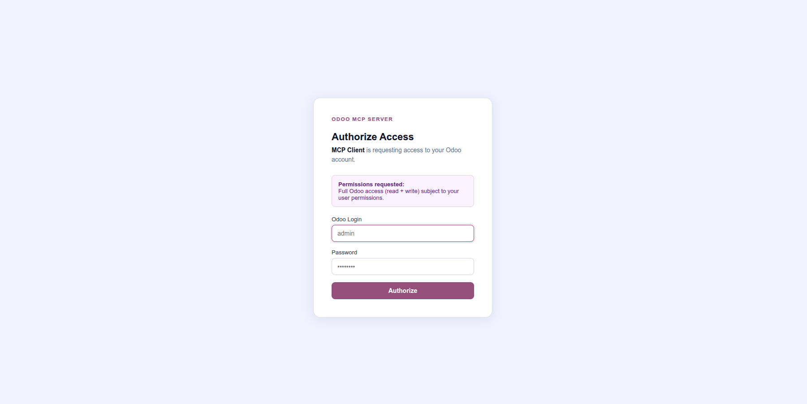
Tokens de Acceso Personal
Cada usuario puede generar sus propios Tokens de Acceso Personal con alcance para herramientas de línea de comandos, pipelines de CI e integraciones sin interfaz. Cifrados con hash SHA-256 en reposo, mostrados solo una vez.
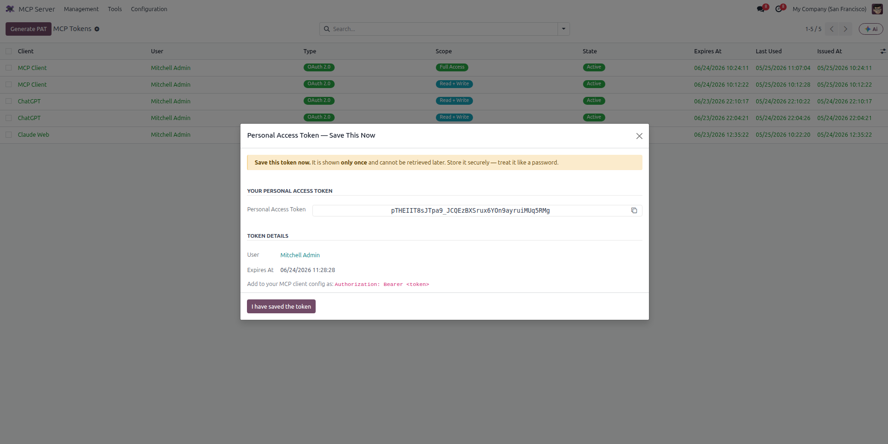
Gobernanza de tokens
Configura el alcance por token (solo lectura, lectura-escritura, administrador), lista de modelos permitidos, lista de campos permitidos, lista de IP permitidas/denegadas y captura de carga útil para auditoría — acceso de mínimo privilegio por defecto.
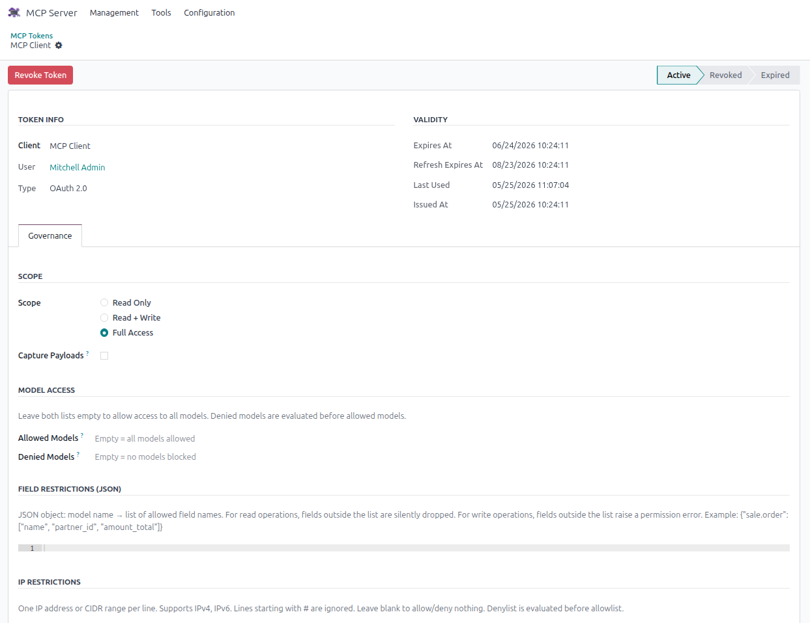
Rastro de auditoría de sesiones
Cada sesión MCP se registra con el tipo de transporte, la dirección IP, el número de llamadas a herramientas, la duración y (opcionalmente) las cargas útiles completas de solicitud/respuesta con ocultación de PII.
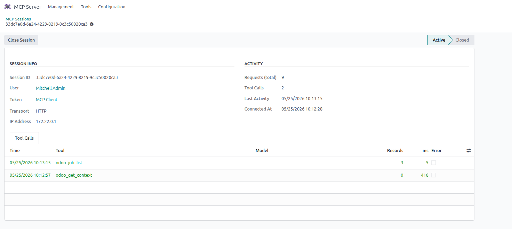
Cola de Trabajos Asíncronos
Delega el trabajo pesado — actualizaciones masivas, exportaciones masivas, automatizaciones de varios pasos — a una cola en segundo plano. Consulta el progreso, inspecciona las cargas útiles, reintenta los fallos y devuelve los resultados al cliente de IA sin alcanzar los límites de tiempo de espera HTTP.
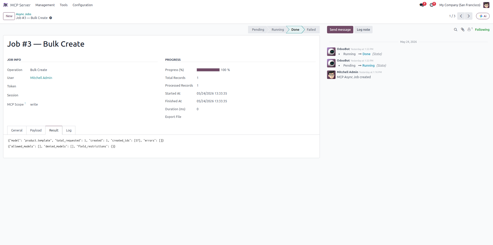
Páginas de Portal generadas por IA
Pídele a Claude que "cree un tablero de envíos en /mcp-page/shipping" y obtén una página pública y adaptable a móviles, renderizada en el servidor a partir de datos de Odoo en vivo — tarjetas KPI, visualizaciones de ECharts y tablas interactivas, sin necesidad de trabajo de front-end.
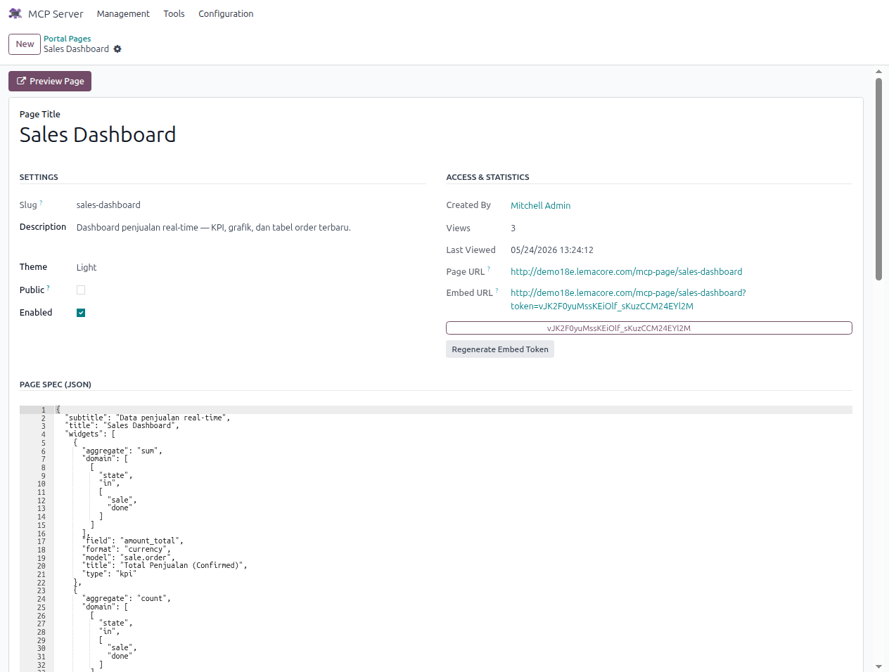
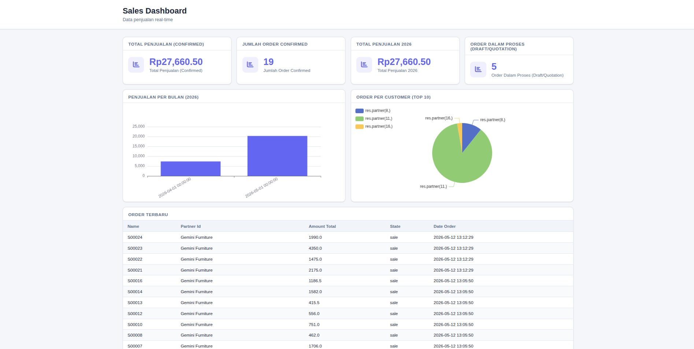
Generador del prompt al módulo
Describe el módulo que necesitas en lenguaje natural. Claude produce una especificación validada, el generador construye un módulo de Odoo completo (modelos, seguridad, vistas, menús) y puedes instalarlo directamente o descargar el ZIP para revisarlo.
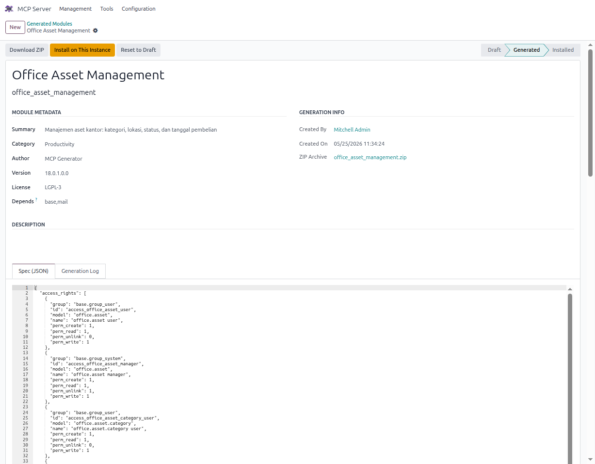
Un solo panel de configuración para todo lo de MCP
Gestiona políticas de retención, límites de tasa, caché de Redis, TTL de la caché de esquema y el indicador de función del generador de módulos — todo desde una única pantalla dentro de la Configuración de Odoo. No se requiere ninguna interfaz de administración externa.
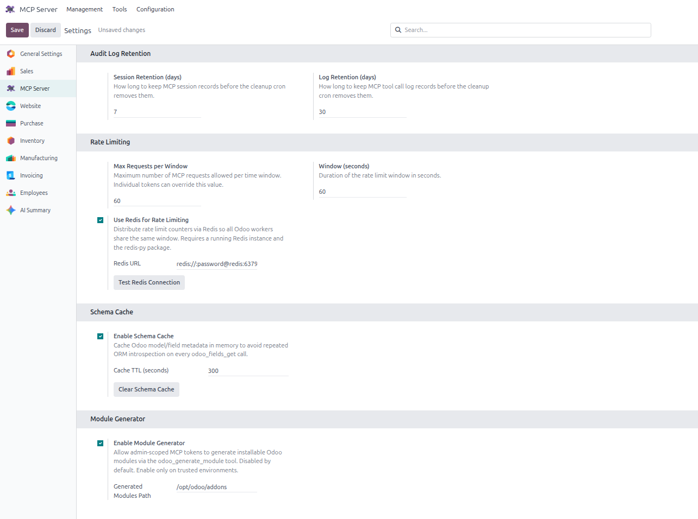
Conversaciones con agentes de IA
Conversaciones reales con Claude consultando datos de Odoo en vivo — busca registros, crea pedidos de venta, publica mensajes en el chatter, genera informes, todo mediante lenguaje natural.
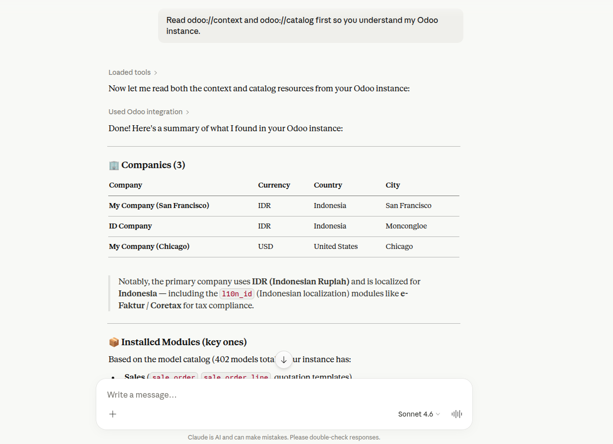
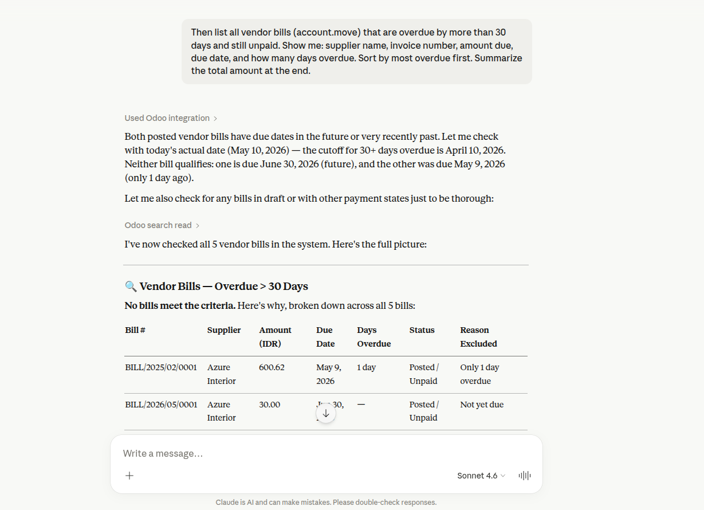
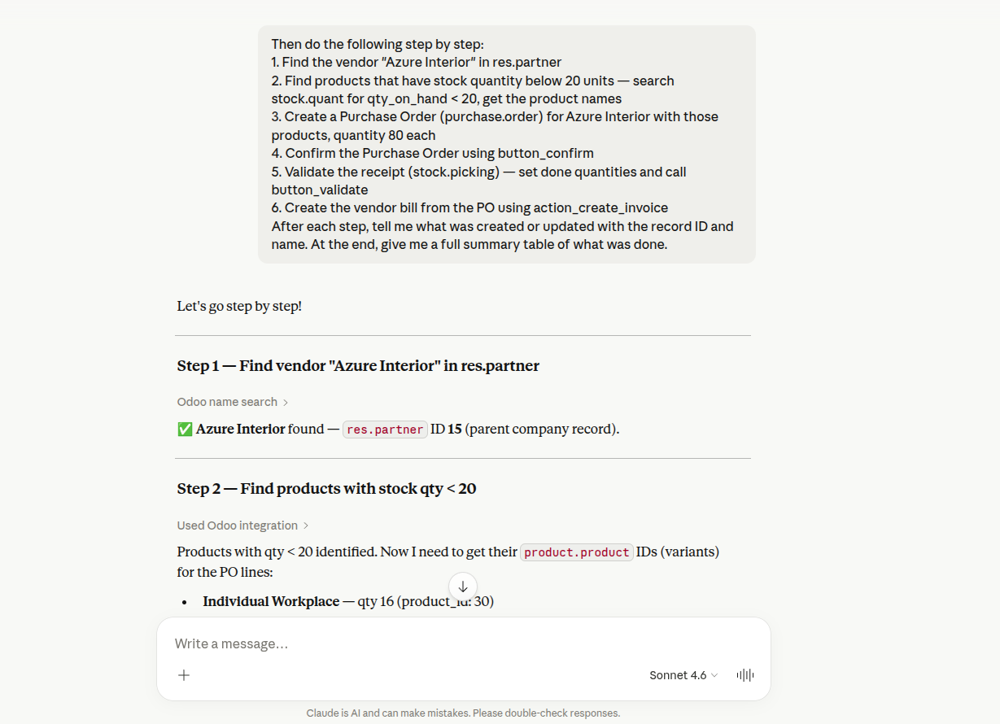
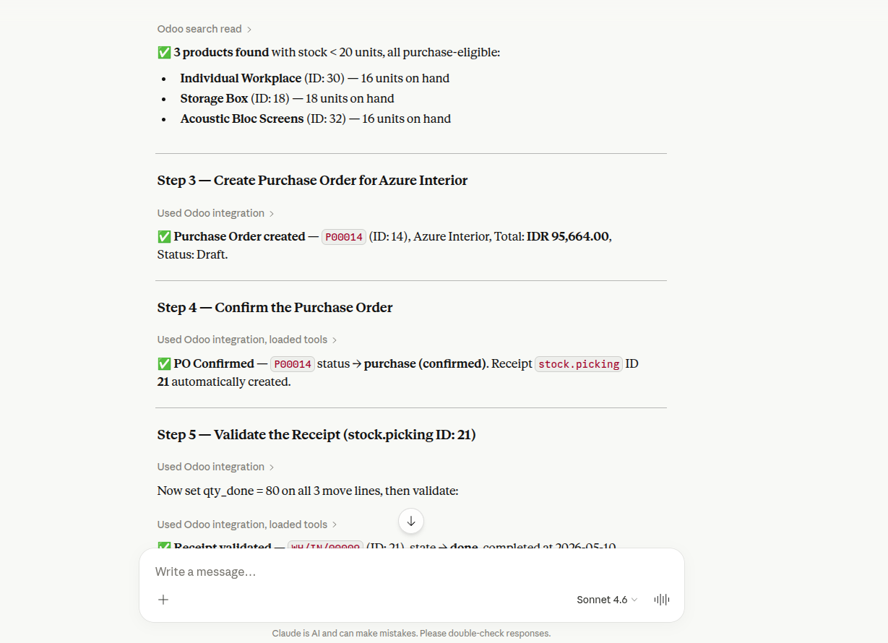
Acceso móvil
Pregúntale a Claude desde tu teléfono.
Obtén datos de Odoo en vivo en segundos.
Sin VPN. Sin pantalla de inicio de sesión de Odoo. Sin informes que ejecutar. Solo abre Claude en tu teléfono, haz una pregunta en lenguaje natural,
y recibe datos de ERP en vivo al instante — desde cualquier lugar, en cualquier dispositivo.
Haz clic para abrir a tamaño completo
📱
Cualquier dispositivo, en cualquier lugar
Teléfono, tablet o escritorio. La conexión de Claude sigue al usuario — no al dispositivo ni a la red de la oficina.
💬
Consultas en lenguaje natural
"¿Cuáles son mis facturas pendientes?" — Claude consulta Odoo y devuelve una respuesta clara y estructurada en segundos.
🔒
Totalmente gobernado
Alcances por clave, ACL de Odoo y registros de auditoría — cada consulta móvil está controlada, es rastreable y de mínimo privilegio.
Features
What You Get
Connectivity & Authentication
🔐 OAuth 2.0 + PKCE
Standards-compliant Authorization Code flow with PKCE S256, dynamic client registration (RFC 7591), refresh token rotation, and auto-discovery via /.well-known endpoints.
🔑 Personal Access Tokens
Self-service token management. Each user mints PATs for headless integrations. SHA-256 hashed at rest, displayed only once at creation.
⚡ Dual Transport
Streamable HTTP transport (MCP spec 2025-03-26) plus legacy SSE — works with Claude Desktop, ChatGPT, Cursor, Gemini, n8n, LangChain, and any MCP-capable client.
Governance & Audit
🛡️ Per-Token Scope
Read-only, read+write, or admin. Restrict the blast radius of each token. Combine with model allowlist and field allowlist for precise least-privilege access.
🌐 IP Allow/Deny Lists
CIDR-based IP restrictions per token. Lock tokens to your office network, your VPN range, or a specific automation server.
🔎 Audit Trail + Redaction
Every tool call logged with duration, record count, and result. Optional payload capture with automatic PII redaction (passwords, tokens, SSN, credit cards).
Advanced Capabilities
📊 BI Reporting Tools
Seven analytics tools in one call: pivot tables, time-series with gap-filling, top-N ranking, cohort retention, funnel conversion, CSV and XLSX exports.
🌍 Portal Pages
Public shareable dashboards with KPI tiles, ECharts visualizations, and tables. Server-side rendered, always live, mobile-responsive, embeddable via signed URL.
⚙️ Async Job Queue
Submit bulk updates, exports of 100k+ records, or heavy method calls and poll for status. Background cron processes jobs respecting token scope and restrictions.
Infrastructure
Deployment & Performance
Designed from the ground up for production use with horizontal scalability and observability.
🚀 Horizontal scalability
- Works with 1 worker, 10 workers, or 100+ workers
- Redis-backed distributed rate limiting (no coordination needed)
- Shared cache for model schemas across all workers
- No session affinity or sticky sessions required
- Automatic fallback if Redis unavailable
⚡ Performance benchmarks
- Cached requests: ~2ms (96% faster)
- Uncached requests: ~50-100ms (standard)
- Throughput: 4x improvement with caching
- Cache hit ratio: 80-90% typical
- Latency percentiles: p50: 3ms, p95: 25ms, p99: 80ms
What You Get
Capabilities
Built for secure AI connectivity with governance, least privilege, and predictable tooling.
🔧 Core capabilities
- MCP-style JSON-RPC endpoint for tool discovery and execution
- CRUD tools for controlled read/write operations
- Model discovery & description for agent planning
- Reporting/BI helpers (pivot, timeseries, top-N, cohort, funnel, export)
- Portal pages at /mcp-page/<slug> (KPIs, charts, tables)
- Module Builder for validated specs + installable ZIP modules
- Batch & async tools for efficient multi-call flows and long-running jobs
🛡️ Valuable safeguards
- Per-key scopes and standard Odoo ACLs/record rules
- Field allowlists and domain filters for least privilege
- Distributed rate limits with Redis backing (or in-memory fallback)
- Token rotation with zero-downtime grace periods
- Schema caching with automatic invalidation
- Audit logs with optional payload capture and retention policy
Connect multiple LLMs and agent frameworks: Claude, ChatGPT, Gemini, custom LLMs, LangChain, and crewAI.
System Architecture
End-to-End Integration
AI client → OAuth or Bearer token → /mcp endpoint → governance gate → tool dispatcher → live Odoo data
Transport Modes
Technical Specifications
Built on Odoo 18 Standards
📦 Dependencies
- base, web, mail
- Optional: redis-py (for distributed rate limit)
- Optional: xlsxwriter (for XLSX export)
🖥️ Deployment
- Odoo Community & Enterprise
- Odoo.sh (PaaS)
- On-Premise multi-worker
⚡ Performance
- Schema cache for fields_get / get_models / get_views (configurable TTL)
- Redis-backed distributed rate limit with in-memory fallback
- Auto-invalidation on schema change, LRU eviction at 1000 entries
🔒 Security
- Bearer tokens SHA-256 hashed, 30-day access / 90-day refresh expiry
- Per-token scope, model allowlist, field allowlist, IP allow/deny lists
- HTTPS enforcement option, CORS preflight, RFC 7009 token revocation
Integration Guides
How to Connect
Connect your favorite AI client to live Odoo data in minutes. No code required.
Step-by-step
Connect with Claude Web
Use Claude.ai with MCP to query Odoo data, create records, run reports, and build dashboards — directly from your browser.
- Install MCP Server for Odoo from the Apps menu.
- Go to MCP Server → Settings and copy your MCP endpoint URL.
- In Claude.ai, open your Project settings and add a new MCP integration.
- Paste your Odoo MCP endpoint and authorize via OAuth 2.0.
- Start chatting — ask Claude to search records, create invoices, or build a dashboard.
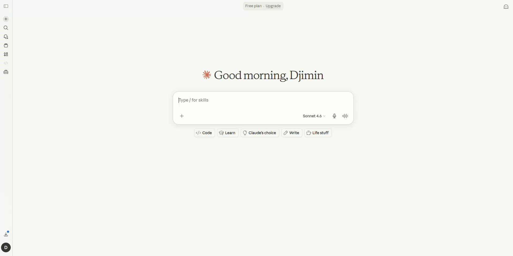
Step-by-step
Connect with Grok
Grok supports MCP connections for tool use. Link it to your Odoo instance and query your business data with natural language from the Grok interface.
- Generate a Personal Access Token from your Odoo user profile.
- In Grok's tool settings, add a new MCP server with your Odoo endpoint URL.
- Enter your Bearer token for authentication.
- Grok will auto-discover all available Odoo tools via tools/list.
- Ask Grok to pull CRM data, run analytics, or generate a report.
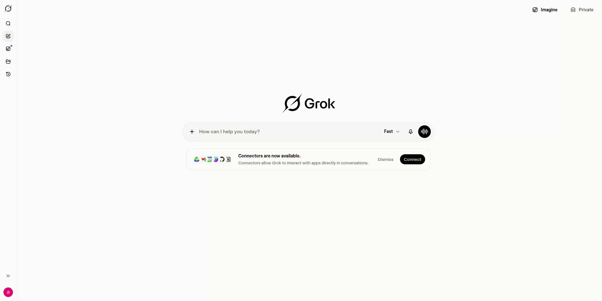
Step-by-step
Connect with ChatGPT
ChatGPT supports MCP servers through its connector framework. Point it at your Odoo MCP endpoint and give ChatGPT full access to your live ERP data.
- Go to MCP Server → Tokens and create a token with the required scope.
- In ChatGPT settings, navigate to Connectors and add a new MCP connection.
- Enter your Odoo MCP URL and paste your Bearer token.
- ChatGPT will auto-discover all tools from the tools/list endpoint.
- Start a chat: "What are my top 5 customers by revenue this month?"
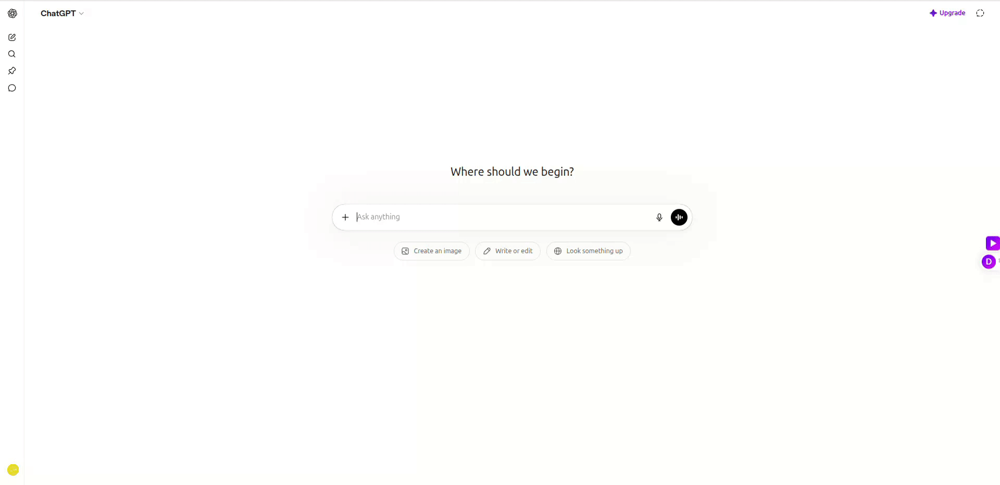
Version History
What's New
Frequently Asked Questions